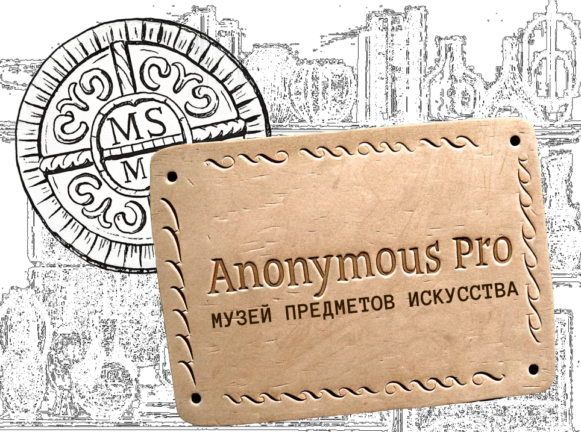
Anonymus Pro
Витрина
A
K
W
Гротеск
Черты
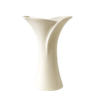
камень- строгий
- лаконичный
- чёткий
- нейтральный
- доступный
- надёжный
- понятный
- практичный
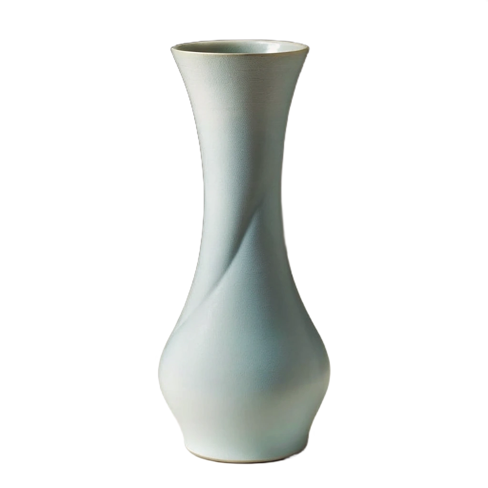
металл◆◊◆◊◆◊◆◊◆◊◆◊◆◊◆◊◆◊◆◊◆◊◆◊◆◊◆◊◆◊◆◊◆◊◆◊◆◊◆◆◊◆◊◆◊◆◊◆◊◆◊◆◊◆◊◆◊◆◊◆◊◆◊◆◊◆◊◆◊◆◊◆◊◆◊◆◊◆◆◊◆◊◆◊◆◊◆◊◆
Начертания
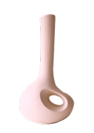
Regular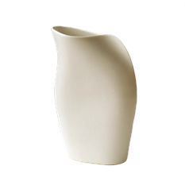
Bold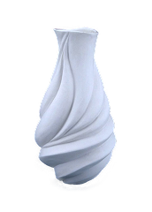
Italic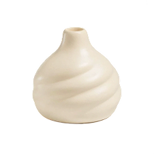
Bold Italic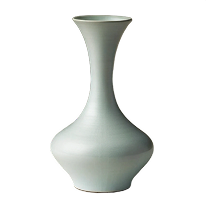
глина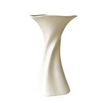
гипсМатериалы
•‡•‡•‡•‡•‡•‡•‡•‡•‡•‡•‡•‡•‡•‡•‡•‡•‡•‡•‡••‡•‡•‡•‡•‡•‡•‡•‡•‡•‡•‡•‡•‡•‡•‡•‡•‡•‡•‡••‡•‡•‡•‡•‡•‡•‡•‡•‡•‡•‡•‡•‡•‡•‡•‡•‡•‡•‡•
1 шрифт = 67 языков
АБВГДЕЁЖЗИЙКЛМНОПРСТУФХЦЧШЩЪЫЬЭЮЯабвглеёжзийклмнопрстуфхцчшщъыьэюя
ABCDEFGHIJKLMNOPQRSTUVWXYZabcdefghijklmnopqrtuvwxyz
阿贝非给得也用热赛伊伊可罗肯卡艾了艾姆恩哦佩艾和艾斯泰吴艾弗哈册切沙夏图路迪斯尼亚克俄灭斯迪斯尼亚克诶哟亚
Чёткие различия
0
1
i
1
}
O
l
I
7
]
Ω∆Ω∆Ω∆Ω∆Ω∆Ω∆Ω∆Ω∆Ω∆Ω∆Ω∆Ω∆Ω∆Ω∆Ω∆Ω∆Ω∆Ω∆Ω∆ΩΩ∆Ω∆Ω∆Ω∆Ω∆Ω∆Ω∆Ω∆Ω∆Ω∆Ω∆Ω∆Ω∆Ω∆Ω∆Ω∆Ω∆Ω∆Ω∆ΩΩ∆Ω∆Ω∆Ω∆Ω∆Ω∆Ω∆Ω∆Ω∆Ω∆Ω∆Ω∆Ω∆Ω∆Ω∆Ω∆Ω∆Ω∆Ω∆Ω
1234567890+-!?
АаБбВвГгДдЕеЖж
История создания
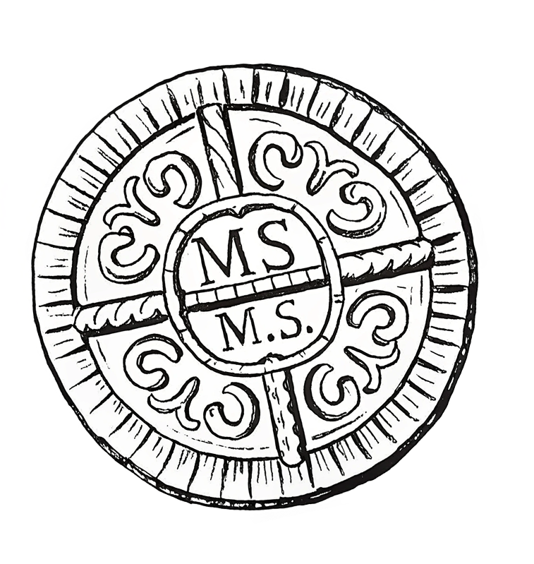
Дневник исследователя:
В поисках истоков Anonymous Pro
Anonymous Pro основан на более раннем шрифте Anonymous™ (2001), моей версии TrueType для Anonymous 9, растровом шрифте для Macintosh, разработанном в середине 90-х Сьюзан Леш и Дэвидом Ламкинсом.
Существует две версии: Anonymous Pro и Anonymous Pro Minus. Anonymous Pro содержит встроенные растровые изображения меньшего размера, а Anonymous Pro Minus - нет.
Anonymous Pro распространяется с лицензией Open Font License (OFL) — свободная и открытая лицензия, разработанная SIL International, используется для многих свободных шрифтов у которых открыт исходный код.
Шрифт бесплатно доступен для личного и коммерческого использования.
Находки артефактов
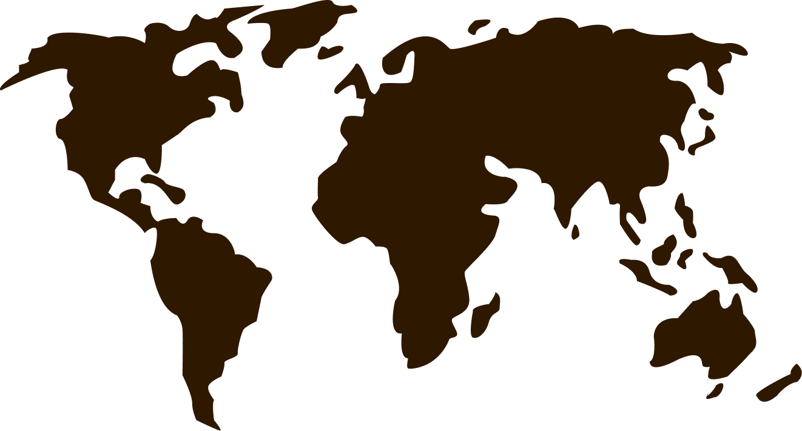
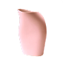
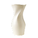
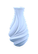
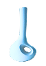
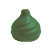
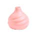
Раскопки артефактов проходили почти по всему миру, в результате чего, обнаружено 67 языков. В Anonymous Pro используется международный набор символов на основе Unicode с поддержкой большинства западноевропейских и центральноевропейских языков, основанных на латинице, а также греческого и кириллицы.
АНАТОМИЯ ГЛИФОВ
┬┴┼┬┴┼┬┴┼┬┴┼┬┴┼┬┴┼┬┴┼┬┴┼┬┴┼┬┴┼┬┴┼┬┴┼┬┴┼┬┴┼┬┴┼┬┴┼┬┴┼┬┴┼┬┴┼┬┴┼┬┴┼┬┴┼┬┴┼┬┴┼┬┴┼┬┴┼┬┴┼┬┴┼┬┴┼┬┴┼┬┴┼┬┴┼┬┴┼┬┴┼┬┴┬┴┼┬┴┼┬┴┼┬┴┼┬┴┼┬┴┼┬┴┼┬┴┼┬┴┼┬┴┼┬┴┼┬┴┼┬┴┼┬┴┼┬┴┼┬┴┼┬┴┼┬┴┼┬┴┼┬┴
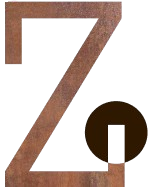
223pxБез засечек, но концы штрихов квадратные, не плавные
01
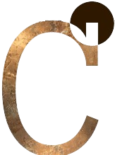
75px 73pxЗагнутый внутрь конец штриха
02
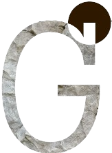
75px 120pxИнтересная квадратная форма конца штриха
03
Аккуратная, элегантная, равномерная, симметричная
04
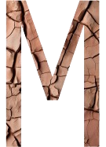
143pxЧёткая, узкая, легкочитаемая, симметричная
05
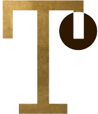
223pxПрямые линии у многих букв, минимальная кривизна
06
┬┴┼┬┴┼┬┴┼┬┴┼┬┴┼┬┴┼┬┴┼┬┴┼┬┴┼┬┴┼┬┴┼┬┴┼┬┴┼┬┴┼┬┴┼┬┴┼┬┴┼┬┴┼┬┴┼┬┴┼┬┴┼┬┴┼┬┴┼┬┴┼┬┴┼┬┴┼┬┴┼┬┴┼┬┴┼┬┴┼┬┴┼┬┴┼┬┴┼┬┴┼┬┴┬┴┼┬┴┼┬┴┼┬┴┼┬┴┼┬┴┼┬┴┼┬┴┼┬┴┼┬┴┼┬┴┼┬┴┼┬┴┼┬┴┼┬┴┼┬┴┼┬┴┼┬┴┼┬┴┼┬┴
Цифры
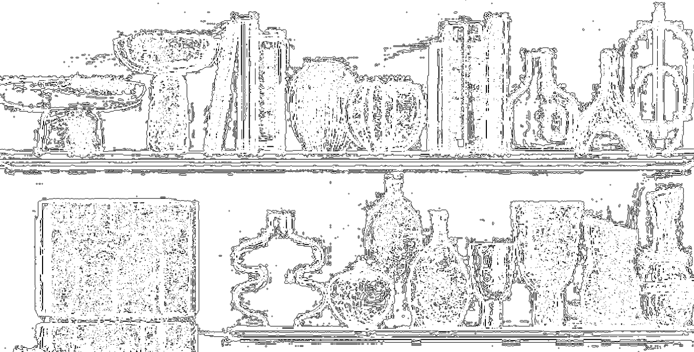
1
2
3
4
5
7
8
9
10
11
12
13
14
15
1. Деревянная чаша, Бали, 2020, тик, ручная резьба. Минимализм и тепло дерева.
2. Бежевый керамический стакан, Япония, 2023, глина, ручная работа. Традиция и современный стиль.
3. Черная минималистичная скульптура-ваза, Скандинавия, 2019, керамика, литье. Игра форм и теней.
4. Ваза цвета слоновой кости, Греция, 2018, керамика, ручная роспись. Возвращение к классике.
5. Абстрактная ваза, 2021, металл, ручная сварка. Современный арт-объект.
6. Чайник-скульптура, Бельгия, 2022, фарфор, ручная роспись. Искусство для повседневности.
7. Большая деревянная чаша, Индия, 2015, дерево манго, ручная резьба. Простота и естественность.
8. Керамический кувшин, Марокко, 2017, глина, гончарный круг. Тепло земли.
9. Ваза в форме бутылки, Испания, 2020, стекло, ручная работа. Игривый дизайн.
10. Ваза-тыква, Китай, 2023, керамика, глазурь. Форма, вдохновленная природой.
11. Мягкая ваза, Япония, 2024, хлопок, лен. Модное текстильное изделие, которое можно использовать как вазу.
12. Кубок ваза, Украина, 2019, керамика, ручная работа. Традиции украинской керамики.
13. Кофейная ваза, Германия, 2020, фарфор, ручная роспись. Геометрический дизайн.
14. Стеклянный стакан ваза, Италия, 2021, стекло, ручная работа. Простота и элегантность.
15. Ваза с рельефом, Индонезия, 2023, глина, ручная работа. Красивая текстурная ваза.
16. Ваза с текстурой, Иран, 2022, глина, ручная работа. Нестандартная шершавая структура..
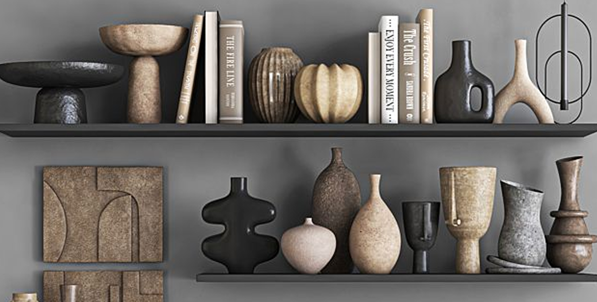
Особенности
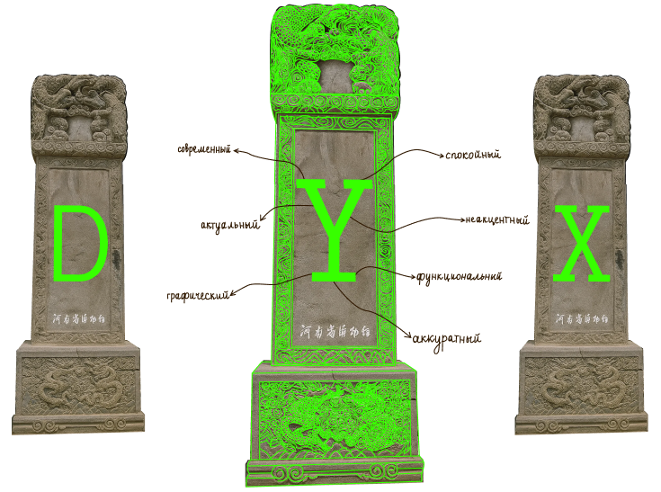
Глифы
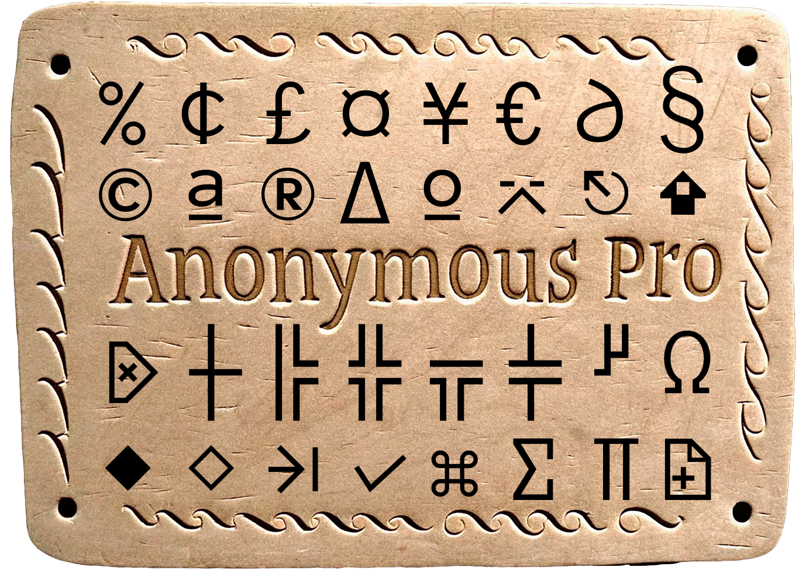
Глифы — это не просто символы. Это уникальные графические представления, которые могут меняться в зависимости от контекста и дизайна. Глифы — это то, благодаря чему одна и та же буква "а" может выглядеть по-разному в разных шрифтах. Это основа типографики и ключ к созданию привлекательного текста.
Сувениры
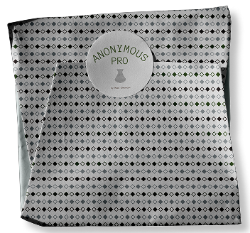
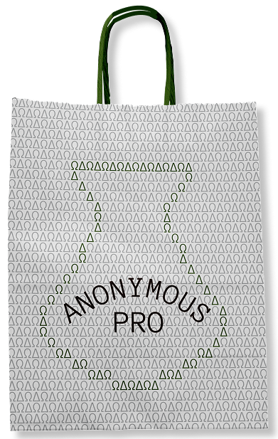
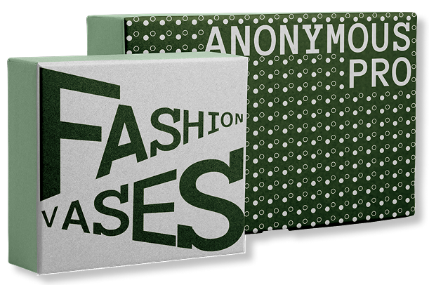
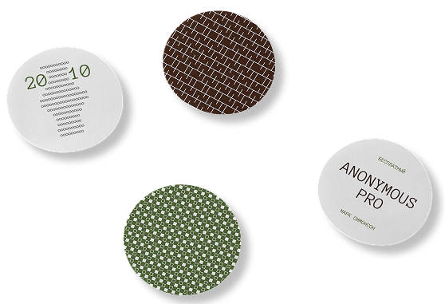